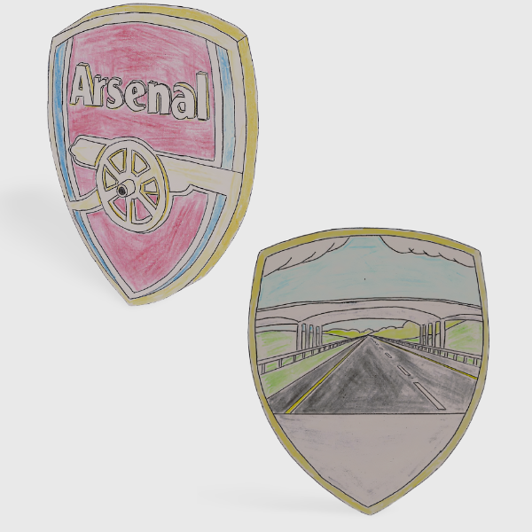
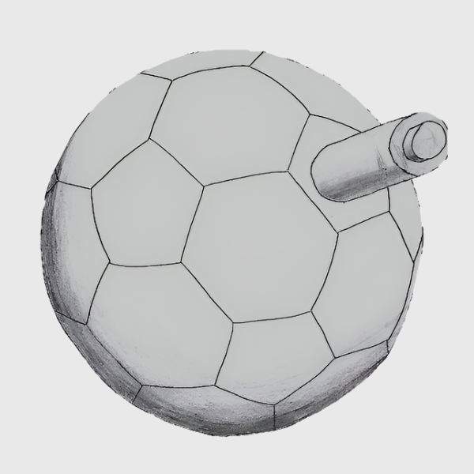
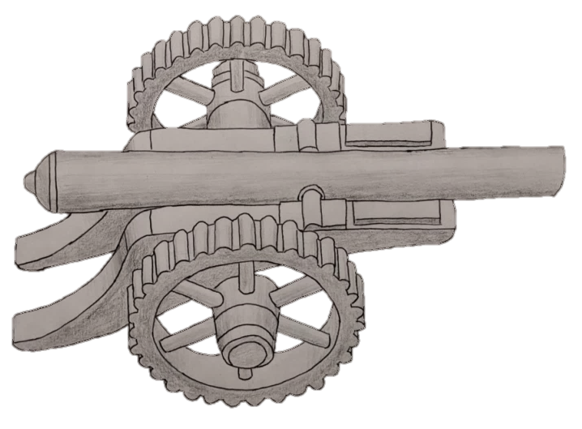

To decide which idea would be the best idea for my portfolio, I came up with a number of ideas and I picked the idea which was the most suitable in my opinion.
My first idea was to create a dash-cam which is in the shape of Arsenal’s crest. The lens can be seen as the axle of the cannon's wheel. The opposite side of the dash-cam shows a large screen which has the shape of the badge, with plenty of room to capture and show the full accident in the event of a crash. It would be fixed in the car by a suction cup windscreen mount. The colour scheme would resemble the official badge.

Pros:
• There is a large screen for viewing, meaning more action can be seen
than a regular smaller screen.
• The iconic badge can be clearly seen with this design, therefore it
is definitely intended for the target audience.
Cons:
• One of the main purposes of a dash-cam is to be hidden from other's
view. As a result of this, having a screen forces the dash-cam to be larger
than ones without a screen and so it couldn’t be a very discreet dash-cam.
This could make it a target for theft.
• A big screen could possibly distract the driver while driving. This is
potentially very dangerous and could place lives in danger if it is too much
of a distraction.
• This dash-cam could also increase the driver’s blind spots as it is
too big than non-screen dash-cams.
Sketches I drew
Another seperate idea I had was to base a dash-cam off an Arsenal themed soccer ball. My inspiration for this was a soccer ball that I saw on the Official Arsenal FC Online Store. I decided to add a camera sticking out of the ball so the video could be caught with as little disruption to the ball as possible. There is o creen on the ball as I wanted to keep with the ball theme as much as I possibly could. It would be rested the dashboard but it might be feasible for it to be mounted with a mount however it could interfere with the camera.

Pros:
• The lack of screen would allow the dash-cam to be small as modern
technology allows it to be maybe the size of a tennis ball. As a result of this,
it would attract minimal amount of attention from any thief passing by.
Cons:
• The circular design makes it unsuitable to be placed on the dashboard of a
car because of the expected rocking motion of the car.
• Even taking into consideration its colour scheme, this ball design isn’t
really associated with Arsenal FC. This would make it harder to market to
consumers who are looking for a classic themed Arsenal dash-cam.
Sketch I drew
My final idea was to make a dash-cam based on the traditional 18th century cannon which is featured on the arsenal crest. This cannon will sit on the dashboard. This will have Wi-Fi and Bluetooth adaptability so it will not need a screen as it can display the images to your phone in real time. The camera would be displayed through the open end of the cannon.

Pros:
• I decided for this design to remove the screen from this dash-cam. As a
result of this, it can remain smaller inside a car and is therefore less obvious
to thieves.
• I think that the use of solar panels is clever because no wires are needed to
power this dash-cam.
• By looking at this design you can clearly see that it is richly associated with
the intended theme and therefore it is a great choice for the target market.
Cons:
• The wheels may allow it to roll however I resolved that they could be locked
into place in the final design process.
Sketch I drew
You can view the full breakdown here